Questão 1 · Restrição de crescimento f etal RCF · Obstetrícia · 4000185518Paciente de 28 anos, G2PC1A0, IG 31 semanas, encaminhada ao Pré-Natal de Alto Risco (PNAR) devido a quadro de crescimento intrauterino restrito (CIUR). Na história clínica: tabagismo 10 cigarros/dia desde a adolescência e lho anterior nasceu com 34 semanas devido a quadro de CIUR. Não apresentava doenças sistêmicas. Ao exame clínico apresentava UF de 28cm e BCF de 132bpm. O último US era de 27 semanas com peso fetal estimado entre os percentis 3 e 10, sem Doppler. Solicitado ultrassonogra a com Doppler na urgência que confirmou o CIUR. Assinale a opção com a avaliação pela Dopplervelocimetria que, se estiver alterada, define a necessidade da interromper a gestação:
A Estudo da artéria cerebral média (ACM) que é marcador do mecanismo de compensação fetal
B Estudo das artérias umbilicais, um marcador da reserva funcional placentária
C Estudo das artérias uterinas que avalia o fluxo uteroplacentário
D Estudo do ducto venoso que é marcador da descompensação e da exaustão do mecanismo de compensação
Questão 2 · Restrição de crescimento f etal RCF · Obstetrícia · 4000183341Para um feto entre o 3º e o 10º percentil de crescimento, que não apresenta comprometimento da vitalidade, o momento ideal da interrupção da gestação será:
A Antes da 37ª semana.
B Entre a 37ª e 38ª semanas.
C Entre a 38ª e 39ª semanas.
D A partir da 39ª semana.
Questão 3 · Restrição de crescimento f etal RCF · Obstetrícia · 4000182960Primigesta na 35ª semana de gravidez, apresenta curva de altura uterina estacionada. Ultrassonogra a com Doppler: feto com peso no percentil 8, líquido amniótico normal, índice de pulsatibilidade menor que o percentil 95 na artéria umbilical e acima do percentil 5 na artéria cerebral média. O diagnóstico mais provável é
A restrição de crescimento fetal tardio.
B restrição de crescimento fetal precoce.
C pequeno para idade gestacional.
D crescimento fetal adequado.
Questão 4 · Dopplervelocimetria Doppler · Restrição de crescimento f etal RCF · Obstetrícia · 4000181268S.T.B., 36 anos, GII PI 1C A0, IG usg: 34 semanas, deu entrada no PSO com queixa de escotomas, dor em hipocôndrio direito e náuseas. PA de 150 x 100 mmHg. Nega aumento de PA prévio. Ausência de edema de membros inferiores. Rotina de pré-eclâmpsia: relação proteína na urina/creatinina na urina de 0,4, TGO 20, TGP 25, hb 11, htco: 33, plaquetas: 160.000, DHL 400, Bb totais de 0,8; Cr 0,9. Paciente submetida a ultrassom obstétrico com doppler que identi cou: peso fetal no percentil 4, ILA normal, placenta anterior, GIII, feto em apresentação cefálica. Doppler de artéria umbilical, conforme imagem a seguir. De acordo com a figura, assinale a interpretação correta do doppler fetal.

A Diástolo zero na artéria umbilical.
B Artéria umbilical com diástole reversa.
C Diminuição do índice de pulsatilidade em artéria umbilical.
D Aumento do índice de pulsatilidade em artéria cerebral média.
E Relação cérebro placentária normal.
Questão 5 · Restrição de crescimento f etal RCF · Obstetrícia · 4000181263A.M.N., 32 anos, GIII PII (1N 1C) A0, IG de 38 semanas e 1 dia, sem comorbidades, veio à consulta de pré natal de rotina, com ultrassom obstétrico com doppler realizado no mesmo dia: feto único e vivo (FUV), apresentação cefálica, peso fetal de 2660g, no percentil 10 (manteve-se na curva de crescimento fetal), de acordo com a curva de Hadlock. Placenta anterior grau III de Grannum, doppler normal. Morfologia fetal normal. Assinale a alternativa que apresenta a conduta correta.
A Internação para interrupção da gestação via baixa.
B Internação para parto cesariano após completado o jejum.
C Internação para acompanhamento do doppler a cada 3 dias, já que o peso fetal encontra-se no limite inferior do normal.
D Retorno ao pré-natal em 7 dias.
E Retorno ao pré-natal em 14 dias.
Questão 6 · Restrição de crescimento f etal RCF · Obstetrícia · 4000170029Primigesta de 19 anos com idade gestacional de 31 semanas apresenta altura uterina abaixo do percentil 10. US: morfologia fetal normal, peso estimado no percentil 3 para a idade gestacional e resistência aumentada ao doppler das artérias umbilicais. O provável diagnóstico é:
A feto pequeno constitucional.
B restrição de crescimento fetal tardia.
C restrição de crescimento fetal precoce.
D datação incorreta.
Questão 7 · Restrição de crescimento f etal RCF · Obstetrícia · 4000169296Paciente na primeira consulta de pré-natal, sem comorbidades, que não sabe informar a data da última menstruação e que também não fez exame ultrassonográ co até o momento. Ao exame obstétrico, é constatado medida da altura uterina de 26 centímetros. Nesses casos, para diferenciar fetos constitucionalmente pequenos de fetos com restrição intra-útero, deverá ser realizado (a):
A Doplervelocimetria da artéria uterina quinzenal.
B Perfil biofísico fetal e cardiotocografia semanais.
C Avaliação mensal do índice de líquido amniótico.
D Avaliação ultrassonográfica da biometria fetal quinzenal.
Revisar: possível letra faltando em enunciado
Questão 9 · Restrição de crescimento f etal RCF · 4000151636Secundigesta, 32 anos de idade com parto anterior por via vaginal há 10 anos. Desde então, devido à ocorrência de pré- eclâmpsia nesta ocasião, evoluiu com hipertensão arterial crônica. Faz suas consultas de pré-natal na Unidade Básica de Saúde e em Unidade de Atenção Terciária. Apresenta a curva demonstrada abaixo - altura uterina e idade gestacional. Também apresenta ganho de peso materno abaixo do esperado para idade gestacional. Devido a esses dados, foi feita a hipótese de restrição de crescimento fetal. Hipótese essa confirmada por exame ultrassonográ co, caracterizando restrição de crescimento fetal tipo simétrico (classificação de Lis & Evans, 1984). Neste caso, o principal parâmetro clínico para o diagnóstico inicial de restrição de crescimento fetal é:
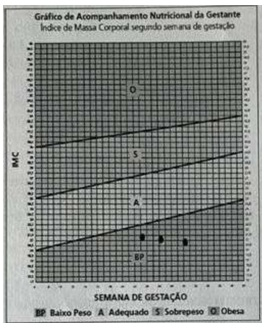

A Exame ultrassonográfico confirmando a hipótese diagnóstica.
B Hipertensão arterial crônica secundária à sequela de toxemia gravídica.
C Ganho de peso ponderal materno menor que o esperado para a idade gestacional.
D Altura uterina menor que a esperada para a idade gestacional em medidas seriadas.
Revisar: possível letra faltando em enunciado
Questão 10 · Conduta · Artéria umbilical · Obstetrícia · 4000147570Gestante de 32 semanas com hipertensão arterial crônica e restrição de crescimento fetal. Apresenta dopplervelocimetria obstétrica da artéria umbilical conforme a imagem em anexo. Qual é a conduta?

A Resolução imediata da gestação.
B Avaliação diária do ducto venoso.
C Avaliação diária da artéria uterina.
D Seguimento no pré-natal de rotina.
E Repetir dopplervelocimetria em uma semana.
Questão 11 · Restrição de crescimento f etal RCF · Obstetrícia · 4000146198O crescimento intrauterino restrito (CIUR) é uma inibição do crescimento fetal. Trata-se de uma complicação frequente da gestação e está associada a uma variedade de desfechos adversos. Sobre o CIUR, assinale a alternativa INCORRETA:
A O CIUR precoce está frequentemente relacionado à pré-eclâmpsia precoce, sendo associado com hipóxia crônica e insuficiência placentária.
B A oligodramnia está sempre presente na restrição do crescimento, mas não se relaciona com o prognóstico da gestação.
C Os fetos com CIUR precoce costumam ser mais imaturos e possuem maior tolerância a hipóxia que os fetos com CIUR tardio.
D O Doppler da artéria umbilical é utilizado para controle e seguimento dos casos de CIUR.
Questão 12 · Restrição de crescimento f etal RCF · Obstetrícia · 4000143196Sobre Restrição de Crescimento Intra-uterino marque a alternativa
A A definição de RCIU considera a associação entre peso e altura fetal em determinada população estudada por meio de curva de crescimento.
B Pode ser classificado em três tipos: simétrico, assimétrico e indeterminado de acordo com o peso ao nascimento.
C Como não existe tratamento padronizado, apenas orientações como repouso em decúbito lateral esquerdo, suspensão de maus hábitos como o tabagismo e álcool, nutrição adequada, dentre outras devem ser estimuladas.
D A cesareana é a única via de parto possível nestes casos que garante bons resultados perinatais.
Questão 13 · Conduta · Obstetrícia · 4000141630Feto restrito com 30 semanas de gestação, morfologicamente normal, apresenta dopplervelocimetria com diástole ausente nas artérias umbilicais. A conduta é
A resolução por cesárea após corticoterapia e sulfato de magnésio.
B acompanhamento pelo ducto venoso.
C avaliação diária com cardiotocografia convencional até 34 semanas.
D resolução imediata por cesárea.
Questão 14 · Restrição de crescimento f etal RCF · 4000141370Acerca da restrição do crescimento intrauterino, é CORRETO afirmar:
A As mulheres com peso inferior a 60 kg têm o dobro do risco para um recém-nascido pequeno.
B Anormalidades cromossômicas, como trissomia do 13, não são aptas a ocasionar restrição em grandes proporções.
C A ocorrência de diabetes, epilepsia e hipotireoidismo pode produzir restrição do crescimento fetal.
D O parto vaginal é contraindicado, devido ao aumento no risco do sofrimento do feto durante o parto.
Questão 15 · Conduta · Conduta · Obstetrícia · 4000140854Gestante de 43 anos de idade, casada, está em consulta pré-natal após submeter-se a reprodução assistida. É primigesta e tem 33 semanas de gestação. Na avaliação clínica, está em bom estado geral, corada, PA 120 x 75mmHg, FC 78 bpm, IMC 21,4 kg/m². A altura uterina é de 31 cm. O BCF está presente e é rítmico. Tônus normal. Traz ultrassonogra a obstétrica mostrando feto único, cefálico, com dorso à esquerda e placenta posterior. Índice de líquido amniótico 9 cm e peso estimado 1685g (percentil 5). Na mesma consulta foi realizada a seguinte avaliação de vitalidade fetal: Valores de referência: A umb PI: 030 a 1,40 A umb S/D: 1,24 a 3,40 A orientação a ser dada à paciente quanto à resolução da gravidez é:
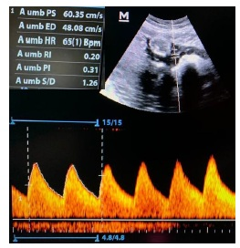

A Indicar parto com 34 semanas de gestação.
B Programar parto no termo precoce.
C Aguardar termo tardio.
D Aguardar até 40 semanas de gestação.
Questão 16 · Restrição de crescimento f etal RCF · 4000140781Primigesta com idade gestacional de 34 semanas (data por ultrassonogra a precoce) procura o pronto atendimento do HUJM queixando-se que a sua barriga não estava crescendo. Realizou apenas uma consulta pré-natal pois cou com medo devido à pandemia. No exame ultrassonográ co realizado no atendimento, o peso fetal é estimado em 1.200 gramas (peso abaixo do percentil 3) e foi observada restrição do crescimento fetal assimétrico, com doppler da artéria umbilical representado abaixo. Com base no caso clínico, assinale a afirmativa correta.
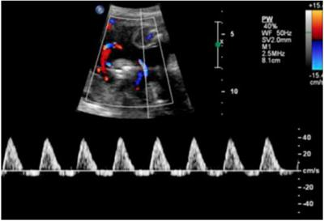
A Há necessidade de realizar ducto venoso semanal até o parto.
B É indicado realizar o ciclo de corticoterapia e aguardar o feto atingir o peso mínimo de 1500 g para a interrupção da gestação.
C Há indicação de interrupção dessa gestação de imediato.
D Pela restrição do crescimento apresentada, devem-se investigar cromossomopatias e infecção congênitas.
Revisar: possível letra faltando em enunciado
Questão 17 · Restrição de crescimento f etal RCF · Obstetrícia · 4000138689Nos casos de restrição do crescimento fetal, é correto afirmar que.
A está recomendada a pesquisa universal de trombofilias e a prescrição de heparina de baixo peso molecular (HBPM).
B as situações patológicas, devido à placentação inadequada, podem revelar, na Dopplervelocimetria das artérias umbilicais, o aumento da resistência de perfusão e a diminuição do fluxo diastólico.
C o clampeamento do cordão umbilical deve ser tardio no parto, para se proporcionar maior transferência de glóbulos vermelhos ao recém-nascido.
D há acometimento da fase de hiperplasia celular na restrição de crescimento fetal do tipo II, assimétrica, de acordo com a classificação de Lin e Evans de 1984.
E o aumento do índice de pulsatilidade da artéria cerebral média (ACM) reflete vasoconstrição cerebral secundária à hipóxia, mecanismo conhecido como “centralização fetal”.
Questão 18 · Restrição de crescimento f etal RCF · Obstetrícia · 4000129859A restrição do crescimento fetal é caracterizada pelo crescimento fetal abaixo do esperado para a idade gestacional, utilizando-se curvas-padrão específicas de cada população. Nesta situação analise as afirmativas abaixo. I - Os fatores de risco podem ser de origem fetal, placentária e materna. II - O crescimento fetal diminuído não está relacionado com doenças cardiovasculares e metabólicas na idade adulta. III - Com tratamentos clínicos adequados, pode se prevenir ou corrigir o crescimento fetal deficiente. IV - A dopplervelocimetria permite diferenciar o feto pequeno patológico do constitucional, além de avaliar o grau de insuficiência placentária. Estão corretas apenas as afirmativas
A I e IV.
B I, II e III.
C I, II e IV.
D II, III e IV.
E I, II, III e IV.
Questão 19 · Diagnóstico · 4000120641Uma gestante de trinta semanas de gravidez, possuidora de dupla lesão de valva aórtica, realizou consulta pré-natal de rotina, em que se notou altura uterina de 26 cm. Tal fato levou o obstetra da paciente a solicitar ultrassonografia, que revelou peso fetal de 1.159 g (P < 3), ILA de 12 cm, Doppler normal em artéria umbilical e artéria cerebral média. Com base nessa situação hipotética, assinale a alternativa correta.
A Dada a restrição de crescimento fetal grave, deve-se realizar o parto imediatamente.
B Deve-se administrar corticoide e programar a resolução para 48 horas, dada a restrição de crescimento fetal grave.
C Trata-se de uma restrição de crescimento fetal precoce.
D Não há elementos suficientes para caracterizar o quadro como restrição decrescimento fetal.
E Em restrições de crescimento fetal como essa, espera-se alteração de STV (Short-termvariation) em cardiotocografia computadorizada antes do aumento da resistência vascular da artéria umbilical ao Doppler.
Questão 20 · Diagnóstico · 4000119151Secundigesta, 1 parto normal anterior, apresenta a seguinte curva de altura uterina durante o pré-natal: Uma hipótese diagnóstica compatível com esse quadro é?
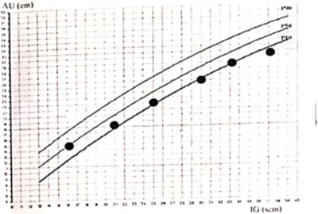
A Hipertensão arterial.
B Diabetes gestacional.
C Aloimunização Rh.
D Obstrução gastrointestinal fetal.
Questão 21 · Etiologia · 4000114637Não é causa comum de CIR (Crescimento Intrauterino Restrito):
A Insuficiência placentária.
B Hipotiroidismo subclínico.
C Desnutrição materna grave.
D Trombofilia.
Questão 22 · Vasos estudados · Diagnóstico · Etiologia · 4000086055Em relação ao crescimento intrauterino restrito (CIUR), a rma-se: I. Há associação entre o CIUR e fatores de riscos cardiovasculares na vida adulta, como hipertensão arterial, dislipidemia e resistência à insulina. II. As principais causas do CIUR assimétrico são genéticas, infecções congênitas e uso de drogas, e a principal causa do tipo simétrico é a insuficiência placentária. III. Devido à placentação inadequada, eleva-se a resistência de perfusão e, consequentemente, o uxo diastólico diminui à dopplervelocimetria das artérias umbilicais e precocemente ocorre alteração do ducto venoso fetal. Está/Estão correta(s) apenas a(s) afirmativa(s)
A I.
B III.
C I e II.
D II e III.
Questão 23 · Diagnóstico · 4000062027Paciente 32 anos, primigesta, comparece à consulta de pré-natal após ter perdido a consulta do mês anterior. Atualmente encontra-se com 32 semanas de gestação. Ao observar o cartão, nota-se que na consulta com 24 semanas, a altura uterina era de 20cm. No exame atual a altura uterina é de 26cm. É CORRETO concluir a respeito do crescimento uterino que:
A A medida do fundo uterino tornou-se pouco importante após a disseminação da ultrassonografia, devido à grande variabilidade, de acordo com o examinador.
B O crescimento foi abaixo do esperado e a ultrassonografia obstétrica poderá revelar um feto com restrição de crescimento.
C O crescimento foi abaixo do esperado e a ultrassonografia obstétrica poderá sugerir má-formação do tubo digestivo fetal como, por exemplo, atresia de esôfago.
D O crescimento foi abaixo do esperado e o diagnóstico de diabetes gestacional poderia justificar esse quadro.
Questão 24 · Prognóstico · Classif icação · Etiologia · 4000050891A restrição de crescimento fetal ocorre quando o feto não atinge o tamanho esperado ou determinado pelo seu potencial genético, sendo identificada clinicamente quando o peso fetal está abaixo do percentil 10 para a idade gestacional. Com relação a esta condição conclui-se que: I - A restrição de crescimento fetal não acarreta influência alguma no desenvolvimento do indivíduo no período pós-natal assim como no estado nutricional na infância. II - Considerando-se o fator causal, a idade gestacional em que ocorre a agressão e os órgãos acometidos, os recém- nascidos com restrição de crescimento fetal são classificados em três tipos: simétrico; assimétrico ou misto; III - A restrição de crescimento fetal não exerce influência sobre as taxas de mortalidade e morbidade infantil; IV - A insu ciência vascular uteroplacentária causa diminuição do uxo e determina a restrição de crescimento no feto por mecanismos como redução da pressão de perfusão, aumento da resistência vascular placentária e diminuição da superfície vascular de trocas, podendo ocorrer em condições como artéria umbilical única, anormalidade uterina (útero bicorno, septado), anormalidade do sítio de implantação (placenta prévia), placenta circunvalada, inserção velamentosa de cordão umbilical, tumores (corioangioma), síndrome de transfusão fetal, mosaico placentário e infartos da placenta.
A As afirmativas I e III estão incorretas.
B Todas as afirmativas estão corretas.
C Nenhuma das afirmativas acima estão corretas.
D Apenas a afirmativa I está correta.
Questão 25 · Indicações · Bases f ísicas da Dopplervelocimentria · Prognóstico · 4000050607A restrição de crescimento fetal (RCF) representa hoje uma patologia de relevância na prática clínica do obstetra. Sabe-se que atualmente o diagnóstico acurado, tal como o manejo criterioso desses fetos, é imprescindível para o desfecho perinatal adequado. Com relação à RCF, assinale a alternativa INCORRETA.
A A mortalidade do feto com restrição de crescimento é cerca de oito vezes maior quando comparada ao feto com peso adequado para a idade gestacional.
B O recém-nascido acometido pela RCF tem maior risco de insuficiência respiratória, hipoglicemia, hipocalemia, hipotermia e prejuízo no desenvolvimento neuropsicomotor.
C O estudo Doppler é um método que auxilia na distinção do feto pequeno para a idade gestacional constitucional daquele feto pequeno por insuficiência placentária.
D Estudos recentes indicam que o risco de resultado perinatal adverso em casos de RCF tardia pode ser melhor avaliado pelo Doppler cerebral, visto que o Doppler da artéria umbilical pode não se modificar.
E Em casos de insuficiência placentária prolongada, evoluindo com vasoconstrição periférica fetal intensa, observa- se a deterioração da função cardíaca que pode ser avaliada pelo Doppler do ducto arterioso.
Questão 26 · Artéria uterina · Indicações · Diagnóstico · 4000042673O exame ultrassonográ co de eleição para avaliar insu ciência placentária em casos com restrição de crescimento intra- uterino é:
A Medida do volume de líquido amniótico.
B Doppler de artérias uterinas.
C Doppler de artéria cerebral média.
D Doppler de artéria umbilical.
Revisar: possível letra faltando em enunciado
Questão 27 · Diagnóstico · Def inição · Crescimento f etal · 4000024917Sobre definição de restrição de crescimento fetal, é correto:
A É a presença de peso fetal abaixo do percentil 10 para a idade gestacional estimado pela altura do fundo uterino.
B A curva de crescimento fetal deve ser igual para toda a população.
C Prematuridade é sinônimo de crescimento restrito fetal.
D Entre as medidas da ultrassonografia, a circunferência abdominal é um dos marcadores mais importantes para a avaliação do estado nutricional do feto.
Questão 28 · Bases f ísicas da Dopplervelocimentria · Conduta · Artéria umbilical · 4000013548O item a seguir apresenta uma situação hipotética, seguida de uma assertiva a ser julgada. Uma paciente com idade gestacional de trinta semanas apresenta quadro de restrição de crescimento fetal e diástole reversa na artéria umbilical, conforme identi cado por doppler. Nessa situação, a conduta recomendada pelo protocolo da Secretaria de Saúde do Distrito Federal é a administração de sulfato de magnésio à mãe, visando à neuroproteção fetal, com posterior interrupção do parto via alta.
A Certo.
B Errado.
Revisar: possível letra faltando em enunciado
Questão 29 · Diagnóstico · 4000123129Mulher, 25 anos, G1P0, 34 semanas de gestação, sem intercorrências vai à consulta pré-natal. Exames de rotina normais. Ganho de peso adequado. Ao exame: normotensa, altura uterina 25 cm; batimentos cardiofetais de 128 bpm; ausência de contrações uterinas. Qual deverá ser a conduta inicial?
A Prescrever corticoterapia.
B Carditotocografia imediata.
C Dopplervelocimetria.
D Perfil Biofísico Fetal.
E Parto cesareana por sofrimento fetal
Questão 30 · Avaliação do Crescimento · Classif icação · 4000115027Considere um recém-nascido que nasceu pequeno para a idade gestacional devido à infecção congênita adquirida no primeiro trimestre de gestação. Considerando a época em que ocorreu o insulto, a classificação do retardo do crecimento intrauterino e o(s) parâmetros(s) antropométrico(s) alterado(s) são, respectivamente:
A assimétrico - a relação segmentos superior-segmento inferior.
B assimétrico - o peso e o comprimento.
C simétrico - apenas o peso.
D simétrico - a relação segmento superior-segmento inferior.
E simétrico - o peso, o comprimento e o perímetro cefálico
Questão 31 · Diagnóstico · 4000113701No rastreamento do crescimento intra-uterino restrito pela ultra-sonografia, o parâmetro mais adequado é:
A Diâmetro biparietal
B A circunferência abdominal
C A circunferência cefálica
D Comprimento do fêmur
E Diâmetro torácico
Questão 32 · Etiologia · 4000105840Gestante de 34 semanas, com idade gestacional confirmada por ultrassonogra a no início da gestação, comparece para consulta pré-natal de rotina. Refere boa movimentação fetal e nega dor ou perda de líquido por via vaginal. A pressão arterial é de 120 × 80 mmHg, a altura uterina é de 28 cm, os batimentos cardíacos fetais estão em 154 por minuto. Baseado no exame físico, o obstetra deve se preocupar com a possibilidade de várias afecções, EXCETO:
A Uso de drogas ilícitas.
B Tabagismo.
C Diabetes gestacional.
D Infecção congênita por citomegalovírus.
E Toxoplasmose gestacional.
Questão 33 · Artéria cerebral média ACM · Conduta · 4000101223Gestante de 32 semanas vem ao PS com queixa de diminuição da movimentação fetal. Até o momento, pré-natal de risco habitual. Foi solicitado ultrassonogra a obstétrica com dopplervelocimetria, com a seguinte imagem em questão: Qual a conduta?

A Amnioinfusão para aumento do líquido amniótico e reavaliação em 12 horas.
B Reavaliação com perfil biofísico fetal em 24 horas.
C Cardiotocografia a cada 6 horas.
D Corticoterapia e resolução da gestação.
Questão 34 · Def inição · PréEclâmpsia · 4000101087PRSD, 42 anos, 4G 2P 1A; IG 31 semanas, dá entrada no PS com queixa de cefaléia. Ao exame: BEG, corada, hidratada, anictérica, acianótica, afebril. PA: 180 X 110 mmHg. Altura uterina: 23cm. Batimentos cardíacos fetais: 140bpm. Dinâmica uterina ausente. Tônus uterino normal. Membros inferiores edema 3+/4. Quais as hipóteses diagnósticas?
A Pré-eclâmpsia superajuntada, trombose venosa profunda.
B Crescimento fetal restrito, pré-eclâmpsia.
C Idade materna avançada, HAC, crescimento fetal restrito.
D HAC, pré-eclâmpsia superajuntada, trombose venosa profunda.
Questão 35 · Diagnóstico · 4000081518Gestante com idade gestacional de 37 semanas. Procura assistência pré-natal após 2 meses sem consulta. O exame obstétrico revela, BCF (batimentos cardíacos fetais): 144, (Altura de Fundo Uterino) AFU: 32 cm, apresentação cefálica, dinâmica uterina esparsada, não dolorosa, sem dilatação cervical. O médico assistente deve suspeitar de:
A Restrição de crescimento fetal.
B Trabalho de parto.
C Prematuridade.
D Gestação normal de baixo risco.
Questão 36 · Etiologia · 4000068373Considerando a restrição de crescimento fetal grave e precoce, assinale a opção que mais comumente se relaciona com esse diagnóstico.
A Cromossomopatia
B Hipertensão arterial
C Diabete gestacional
D Lupus eritematoso sistêmico
E Talassemia major
Questão 37 · Bases f ísicas da Dopplervelocimentria · Diagnóstico · Etiologia · 4000054917Com relação à Restrição de Crescimento Intrauterino (RCIU), assinale a alterantiva correta.
A A restrição de crescimento intrauterino tem como principal causa a infecção por citomegalovírus, visto que esse patógeno está associado à aplasia medular fetal.
B A produção deficiente de insulina materna tem sido demonstrada como fator intrínseco à gênese da RCIU.
C A restrição do crescimento intrauterino pode ser tratada pela utilização de anti- hipertensivos de ação central ou pela utilização de betabloqueadores.
D No caso de diástole zero da artéria umbilical, o próximo vaso a ser avaliado é a artéria cerebral média.
E A dopplervelocimetria permite a diferenciação do feto pequeno por insuficiência placentária do feto pequeno constitucional.
Questão 38 · Conduta · Prognóstico · Diagnóstico · 4000052510A restrição do crescimento fetal é caracterizada pelo crescimento abaixo do esperado para a idade gestacional, utilizando- se curvas-padrão especí cas de cada população. Baseado nesta definição, qual das a rmativas a seguir não é considerada como sendo importante para sua caracterização e conduta?
A Os fatores de risco podem ser de origem fetal, placentária e materna.
B Os tratamento clínicos podem prevenir ou corrigir o crescimento fetal deficiente.
C O crescimento fetal diminuído pode estar relacionado com doenças cardiovasculares e metabólicas na idade adulta.
D A dopplervelocimetria permite diferenciar o feto pequeno patológico do constitucional, além de avaliar o grau de insuficiência placentária.
E O momento do parto deve ser reservado para quando as situações de risco para o feto ao permanecer no útero, se tornarem maiores de que ao receber os cuidados no berçário.
Revisar: possível letra faltando em enunciado
Questão 39 · Altura uterina AU · Diagnóstico · 4000038384Gestante em acompanhamento pré-natal, com idade gestacional de 30 semanas e altura uterina de 23 cm. A situação mais comum nesse caso é
A restrição de crescimento intrauterino.
B defeito aberto do tubo neural.
C diabete gestacional.
D aloimunização Rh.
Questão 40 · Interpretação · Conduta · Diagnóstico · 4000034218Gestante de 38 anos, G1P0A0, sem comorbidades, com pré-natal sem intecorrências e com 37 semanas e seis dias de gravidez. Ultrassonogra a realizada hoje revela peso fetal estimado e cincunferência abdominal fetal no percentil 3. Per l biofísico fetal 6/8 (perdeu em movimento respiratório). Exame clínico e obstétrico sem alterações. Toque vaginal com colo uterino apagado 50%, centralizado e com 2cm de dilatação. Polo cefálico no plano - 2 de De Lee. Bolsa formada. Cardiotocografia fetal realizada no momento do atendimento com padrão tranquilizador. Diante desse quadro, assinale a MELHOR conduta.
A Internar a paciente para administração de corticoterapia.
B Internar a paciente para cesariana eletiva.
C Internar a paciente para indução do parto.
D Internar a paciente para repetir ultrassonografia com Doppler fetal.
Questão 41 · Altura uterina AU · Conduta · Diagnóstico · 4000020460Paciente de 30 anos, G2P1CA0, com 38 semanas de idade gestacional confirmada pelo ultrassom obstétrico de primeiro trimestre, comparece à consulta assintomática, onde é verificada altura de fundo uterino de 28 cm, com restante do exame físico sem anormalidades. Traz ultrassom obstétrico realizado no dia anterior que mostra maior bolsão vertical de líquido amniótico de 1 cm. Qual a conduta ideal a ser tomada?
A Internar para resolução da gestação.
B Repetir ultrassom obstétrico após uma semana.
C Seguir semanal até trabalho de parto ou 41 semanas.
D Orientar ingesta adequada de líquido e repouso domiciliar.
Questão 42 · Indicações · Bases f ísicas da Dopplervelocimentria · Restrição de crescimento f etal RCF · 4000020346Gestante no curso das 31 semanas, com diagnóstico prévio de trombo lia, em uso de anticoagulação pro lática e ácido acetilsalicílico. Realizou avaliação ultrassonográ ca que evidenciou feto com peso estimado abaixo do percentil 10 e Doppler de artéria umbilical com o sonograma apresentado na figura abaixo. Qual a melhor conduta?
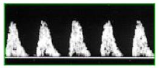
A Dopplervelocimetria obstétrica a cada 2 a 3 dias.
B Dopplervelocimetria obstétrica semanal.
C Perfil biofísico fetal diário.
D Indicar o parto.
Revisar: possível letra faltando em enunciado
Questão 43 · Bases f ísicas da Dopplervelocimentria · Ducto venoso DV · Conduta · 4000006522Gestante com 30 semanas e diagnóstico de restrição de crescimento fetal estabelecido desde a 26ª semana. No acompanhamento pelo exame de Doppler de artéria umbilical a resistência é aumentada, e, na avaliação do ducto venoso verifica-se o resultado demonstrado na imagem. Nesse caso, o próximo passo para o melhor cuidado é:
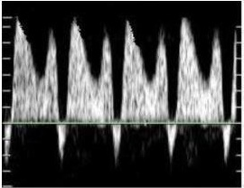
A Preparo de colo e indução do parto.
B Corticoterapia por 48h e indução do parto.
C Corticoterapia por 48h e cesárea.
D Sulfato de magnésio e Doppler diário.
E Sulfato de magnésio e cesárea.
Questão 44 · Relação entre a idade gestacional e achados ultrassonográf icos · 4000128254Primigesta, procura o Pré-natal pela primeira vez. Tendo por base a data da última menstruação, a idade gestacional era de 36 semanas. O exame ultrassonográ co indicou uma idade gestacional de 32 semanas em todos os parâmetros avaliados, incluindo as medidas do diâmetro bi-parietal, circunferência cefálica, circunferência abdominal e comprimento do fêmur. Qual das seguintes condutas, é A MELHOR para essa gestante?
A Amniocentese para avaliar a maturidade pulmonar fetal
B Continuar o acompanhamento pré-natal e repetir a Ultrassonografia em duas semanas
C Corticóide devido à provável presença de restrição ao crescimento fetal
D Manter o acompanhamento pré-natal, tendo por base a idade gestacional ultrassonográfica
Revisar: possível letra faltando em enunciado
Questão 45 · Conduta · Diagnóstico · 4000111690G2P1(N), 30 anos, em seguimento pré-natal, realizou ultrassonogra a com 12 semanas, com Idade gestacional concordante com a amenorreia. Atualmente com 32 semanas e 5 dias, referindo dor em baixo ventre acompanhado de perda de secreção espessa pela vagina e diminuição de movimentação fetal. Ao exame: AU= 26cm, BCF=132bpm, dinâmica uterina ausente. Exame especular= sem alterações, TV= colo grosso, posterior e impérvio, feto alto e pouco móvel. Realizou Ultrassonogra a com Doppler que demonstrou: peso fetal no percentil 5 para a idade gestacional, ILA= 5 cm (<P5), Doppler das artérias umbilicais: IP= 1,60 (>P95) com diástole presente, ACM: IP=1,75 (entre o P5 e P95), Razão cerebroplacentária: 1,09 (normal). Qual o principal diagnóstico e a conduta inicial?
A Centralização fetal, corticoterapia e Indução do trabalho de parto
B Gestação normal, prescrição de sintomáticos e retorno ao pré-natal
C Restrição de Crescimento intrauterino, corticoterapia e controle de Doppler em no máximo 3 dias.
D Trabalho de parto prematuro, corticoterapia e inibição com bloqueador de canal de cálcio.
E Amniorrexe prematura no pré-termo, internação e hidratação.
Questão 46 · Prognóstico · PréEclâmpsia · 4000100033Primigesta, 16a, apresenta os seguintes dados no cartão de pré-natal. O diagnóstico é:
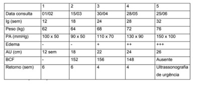
A Hipertensão arterial crônica, restrição de crescimento e óbito fetal.
B Pré-eclâmpsia, restrição de crescimento e óbito fetal.
C Pré-eclâmpsia complicada com iminência de eclâmpsia e óbito fetal.
D Hipertensão arterial crônica, pré-eclâmpsia e óbito fetal.
Questão 47 · Etiologia · 4000082044Qual a causa mais comum de crescimento intrauterino restrito tardio?
A Anormalidades cromossômicas.
B Infecção fetal.
C Insuficiência placentária.
D Malformações congênitas.
E Alterações genéticas.
Questão 48 · Conduta · 4000069228Uma gestante primogesta de 37 semanas é encaminhada ao pronto atendimento por ter realizada ultrassonogra a cujo peso fetal está abaixo do décicmo percentil. Não há evidência de doença materna e os exames de rotina pré-natais são normais. A alttura uterina é de 31 cm, batimentos cardíacos fetais presentes 140 rítmicos, cefálico, dinâmica uterina ausente, toque colo grosso posterior impérvio. Cardiotocogra a tranquilizadora. Realizada ultrassonogra a com doppler com feto morfologicamente normal, peso fetal realmente abaixo do décimo percentil, placenta corporal grau II anterior, líquido amniótico com maior bolsão 6 cm. Doppler da artéria umbilical com resistência normal. A melhor conduta é:
A Induzir o parto imediatamente
B Realizar cesárea imediatamente
C Administrar corticoides e realizar cesárea após 48 h
D Acompanhar com doppler e cardiotocografia semanalmente e se normais induzir com 40 semanas
E Acompanhar com doppler e cardiotocografia semanalmente e se normais realizar cesárea com 40 semanas
Questão 49 · Conduta · 4000067405Paciente VSD, 18 anos, G1, idade gestacional de 35 semanas e 2 dias, apresenta diagnóstico de pré-eclâmpsia, em uso de anti-hipertensivos orais com bom controle pressórico. Vem ao PA da Maternidade com queixa de diminuição da movimentação fetal há 3 dias, ausência de percepção de movimentos fetais há 6 horas. Ao exame: PA: 130x85 mmHg, pulso: 79 bpm, Sat.O2: 99%, T: 36,7 °C. Bom estado geral, corada, hidratada, eupneica, anictérica, acianótica. AU: 31 cm, BCF:126 bpm, movimentos fetais não observados durante o exame. Feto: situação longitudinal, dorso à esquerda, cefálico, alto e móvel. Você solicita exame de cardiotocogra a que foi laudada como categoria II (linha de base: 128 bpm, variabilidade diminuída, ausência de acelerações transitórias e ausência de desacelerações). A paciente é, então, internada e submetida a ultrassonogra a obstétrica com dopplervelocimetria, que apresentou como laudo: feto único, longitudinal, dorso à esquerda, cefálico. Placenta anterior, grau 3 de Grannum. ILA: 51 mm. Peso fetal: 1902 g(p3). Doppler de artérias uterinas com IP acima do p95 para idade gestacional (IG) e presença de incisura protodiastólica bilateralmente. Doppler de artérias umbilicais com IP acima do p95 para IG e presença de onda diastólica reversa. Doppler de artéria cerebral média com IP abaixo do p5 para IG. Relação umbílico/cerebral: 1,26. Com relação ao caso clínico acima, qual deve ser a conduta terapêutica correta?
A A paciente deve ser internada para seguimento com cardiotocografia diária e corticoterapia antenatal por 48 horas, seguida de resolução da gestação.
B A resolução da gestação deve ser indicada tão logo se observe alteração na dopplervelocimetria do ducto venoso.
C A resolução da gestação deve ser preferencialmente por indução do parto vaginal, com paciente e feto constantemente monitorados.
D A paciente deve ser internada para seguimento com cardiotocografia diária sem indicação de corticoterapia antenatal.
E A paciente deve ser internada para seguimento com ultrassonografia e dopplervelocimetria diária, e a cesariana deve ser indicada se observados coágulos retroplacentários.
Questão 50 · Conduta · Diagnóstico · Classif icação · 4000054381Com relação ao crescimento intra-uterino retardado (CIUR), é ERRADO afirmar:
A A ausência de fluxo diastólico no Doppler da artéria umbilical é sinal de mau prognóstico fetal
B A Cardiotocografia seriada é o exame de escolha para o seguimento de fetos com CIUR;
C O tipo mais frequente, nas gestantes portadoras de hipertensão crônica, é o assimétrico;
D O tipo simétrico pode estar associado a cromossomopatias e infecções congênitas
E No tipo assimétrico, o primeiro parâmetro que se altera na USG é o perímetro abdominal.
Questão 51 · Crescimento f etal · 4000049667Mulher, 30 amenorreia. Atualmente idade gestacional de 30 semanas, refere endurecimento da barriga há 1 dia, acompanhado de saída de secreção espessa via vaginal. Antecedente pessoal: tabagismo. Exame İsico: altura uterina= 25cm, batimento cardiofetais= 152 bpm, dinâmica uterina= ausente; especular= ausência de secreções, pH=5,5. O DIAGNÓSTICO É:
A Restrição de crescimento intrauterino.
B Amniorrexe.
C Trabalho de parto prematuro.
D Gestação dentro da normalidade.
Questão 52 · Prognóstico · Classif icação · Oligoâmnio · 4000044121Sobre restrição de crescimento intrauterino (RCIU): a) O tipo 2 é o mais frequente, de pior prognóstico e, em geral, relacionado a insuficiência placentária.; b) Doenças crônicas do adulto como a dislipidemia podem ter origem na vida fetal acometida pela RCIU; c) A presença de desacelerações umbilicais podem surgir na vigência de oligoãmnio. Pode-se assinar como correto o(s) item(ns):
A Apenas A
B apenas A e B
C apenas A e C
D apenas B e C
E A, B e C
Questão 53 · Altura uterina AU · Diagnóstico · Crescimento f etal · 4000023756M.P.E., de 29 anos, idade gestacional de 31 semanas, estimada pela data da última menstruação. Em consulta pré-natal de rotina, foi constatada altura uterina de 26 cm. Caso a estimativa de idade gestacional esteja correta, quais devem ser as primeiras hipóteses diagnósticas e o que deverá ser feito para confirmá-las?
A Oligoâmnio e macrossomia fetal. Toque vaginal, confirmar a idade gestacional através de ultrassonografia mais recente e, caso se confirme a disparidade entre a altura uterina e a idade gestacional, solicitar nova ultrassonografia.
B Polidrâmnio e atraso de crescimento intrauterino. Toque vaginal, confirmar idade gestacional por meio da ultrassonografia mais recente e, caso se confirme a disparidade entre a altura uterina e a idade gestacional, realizar cardiotocografia.
C Polidrâmnio e atraso de crescimento intrauterino. Toque vaginal, confirmar idade gestacional por meio da ultrassonografia mais recente e, caso se confirme a disparidade entre a altura uterina e a idade gestacional, realizar cardiotocografia.
D Oligoâmnio e atraso de crescimento intrauterino. Exame especular, confirmar a idade gestacional por meio da ultrassonografia mais precoce e, caso se confirme a disparidade entre a altura uterina e a idade gestacional, solicitar nova ultrassonografia.
Questão 54 · Artéria uterina · Bases f ísicas da Dopplervelocimentria · Artéria umbilical · 4000016267Gestante de 22 anos, tem idade gestacional de 33 semanas estimada por ultrassonogra a precoce, apresenta PA= 150x100mmHg e relação proteína/creatinina= 1 mg/dl. A altura do fundo uterino é de 28 cm. Realizou ultrassonogra a cujo peso fetal estimado estava abaixo do 3º percentil para 33 semanas e Doppler das artérias uterinas e umbilical com índices acima do percentil 95 sem diástole zero ou reversa. De na o estágio da restrição do crescimento fetal, levando em consideração as novas recomendações de Gratacós (2014).
A Estágio 1
B Estágio 2
C Estágio 3
D Estágio 4
Questão 55 · Conduta · Diagnóstico · Def inição · 4000005129A restrição do crescimento fetal (RCF) pode ser definida como um processo capaz de modi car e restringir o potencial de crescimento do feto. Na prática clínica, é definida por meio do percentil de peso em relação à idade gestacional, sendo considerada RCF quando o peso fetal está abaixo do percentil 3 pela Organização Mundial da Saúde (OMS) ou abaixo do percentil 10 pelo American College of Obstetrics and Gynecology (ACOG). Diante do exposto, é correto a rmar sobre este tema:
A transtornos de nutrição não estão associados à RCF.
B entre os fatores fetais, as anomalias cromossômicas não estão incluídas como causas de RCF.
C a dopplervelocimetria da artéria cerebral média fetal é a única medida que pode informar o diagnóstico e o prognóstico ao mesmo tempo em que acompanha a RCF.
D quando identificado a RCF, deve ser feita a interrupção imediata da gestação, independentemente do tempo gestacional, não havendo a necessidade de avaliar o risco de prematuridade.
E os fatores maternos frequentemente evidenciados na prática clínica são distúrbios hipertensivos, devido à invasão trofoblástica deficiente, e, ao tabagismo, devido à exposição ao monóxido de carbono, que reduz a capacidade da hemoglobina fetal de carrear oxigênio.
Questão 56 · Altura uterina AU · Diagnóstico · 4000003902No acompanhamento pré-natal da gestante deve ser realizada a medida da Altura uterina em todas as consultas e anotação no gráfico de altura uterina x idade gestacional. O registro nal da Sra. Maria José, 39 anos mostra esse pontilhado que pode ser indicativo de:
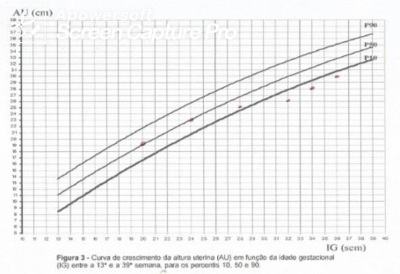
A Macrossomia fetal
B Baixo peso materno
C Restrição crescimento intra-útero
D Mioma uterino
Questão 57 · Classif icação · 4000124414MFR, 30 anos, GIII PII A0, inicia o pré-natal com IG: 29 semanas pela DUM. Não realizou exames. Ao exame: altura de fundo uterino de 22 cm; movimentos fetais presentes e BCF 136 bpm QIE . Qual a alternativa que relaciona o tipo de gestação?
A Evolução normal.
B Múltipla.
C Polidrâmnio.
D Crescimento intrauterino restrito.
E Não se pode suspeitar de patologias neste caso.
Questão 58 · Dopplervelocimetria Doppler · Diagnóstico · 4000117791Observe as imagens: As imagens da dopplervelocimetria das artérias uterinas, realizada com 22 semanas de gravidez, mostram uma alteração que pode associar-se, com o avançar da gestação, a:
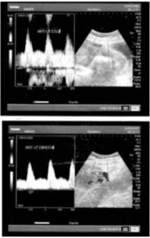
A Acretismo placentário.
B Restrição do crescimento fetal.
C Macrossomia fetal.
D Síndrome do colo curto.
E Microcefalia fetal.
Questão 59 · Diagnóstico · 4000112797Com relação ao gráfico de altura uterina no seguimento de pré-natal, que está reproduzido abaixo, deve-se investigar:
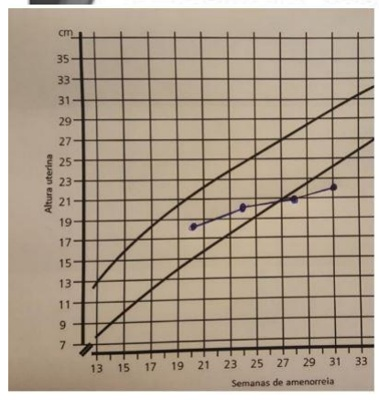
A Restrição de crescimento intrauterino.
B Diabetes gestacional.
C Macrossomia fetal.
D Gemelaridade.
Questão 60 · Diagnóstico · 4000111225A melhor conduta para gestante de 35 anos de idade, primigesta e hipertensa crônica, em uso de metildopa 750 mg/dia, 31 semanas de gestação, com diagnóstico de centralização do fluxo fetal e cardiotocografia normal é:
A Cesariana imediata.
B Resolução por indução (misoprostol), porém com cardiotocografia contínua.
C Adequar a medicação anti-hipertensiva para observar se ocorre a melhora do Doppler.
D Administrar corticoide, acompanhamento com cardiotocografia e cesariana após 48h.
E Administrar corticoide, acompanhamento com cardiotocografia e Doppler.
Questão 61 · Vasos estudados · Conduta · 4000103686Primigesta, 21 anos, tabagista, comparece para consulta de pré-natal com 38 semanas. Queixa-se apenas de contrações esporádicas. Refere boa movimentação fetal. Antecedentes pessoais: nega doenças ou qualquer intercorrência durante o pré-natal. Seu exame físico geral e sinais vitais estão normais. Exame físico obstétrico: altura uterina de 32 cm, sem contrações, e frequência cardíaca fetal de 130 bpm, sem desacelerações. A cardiotocogra a realizada nessa consulta, após alimentação e repouso materno adequado, mostrou: feto hipoativo e hiporreativo. O ultrassom obstétrico realizado após a cardiotocogra a mostrou: feto único, longitudinal, cefálico, com anatomia normal, peso estimado de 2.550 gramas (limites normais para a idade gestacional: 2.430-3.640 gramas), placenta anterior, grau II, per l biofísico fetal de 4/8, maior bolsão de líquido amniótico de 3 cm, índice de resistência da artéria umbilical de 0,68 (limite superior da normalidade: 0,70), índice de resistência da artéria cerebral média de 0,70 (limite inferior da normalidade: 0,63) e índice de pulsatilidade do ducto venoso de 0,86. Qual alternativa possui a melhor conduta imediata para o caso?
A Repetir a cardiotocografia após a realização de manobras de reanimação fetal.
B Resolver a gestação por parto cesárea devido à suspeita de sofrimento fetal agudo.
C Induzir o trabalho de parto por causa do achado de centralização hemodinâmica fetal.
D Complementar o exame ecográfico com o estudo Doppler das artérias uterinas maternas.
Questão 62 · Restrição de crescimento f etal RCF · Crescimento intrauterino restrito · 4000086924Sobre Crescimento Intrauterino Restrito (CIUR), analise as assertativas abaixo: I. Intervenções baseadas na avaliação com doppler uxometria dos vasos fetais podem contribuir para a redução da mortalidade fetal; II. Anemia materna, ismo, anormalidades cromossômicas fetais e infecções fetais são fatores de risco/causas de CIUR; III. O diagnóstico provável é feito por ultrassonografia, e sua confirmação é pós- natal. Quais estão CORRETAS:
A Apenas I.
B Apenas II.
C Apenas III.
D Apenas I e II.
E I, II e III.
Questão 63 · Diagnóstico · 4000086708Mulher de 38 anos, GIIIPIIA0, começa na 32ª semana a apresentar diminuição do crescimento do fundo uterino, com redução da biometria fetal para a idade gestacional, além de exibir oligodramnia leve em duas USG de terceiro trimestre. Atualmente, encontra-se com 38 semanas de idade gestacional e biometria fetal compatível com 34 semanas. É realizado o diagnóstico de crescimento intrauterino restrito assimétrico, com provável causa placentária, através da combinação de dois parâmetros biofísicos:
A Doppler de artéria umbilical e Doppler de artéria cerebral média.
B Circunferência cefálica e Doppler de artéria cerebral média.
C Circunferência abdominal e Doppler de artéria umbilical.
D Diâmetro biparietal e Doppler de ducto venoso.
Questão 64 · Artéria umbilical · Conduta · 4000061463Gestante com 30 semanas de evolução, primigesta, realizou ultrassonogra a de rotina que mostrou feto com peso estimado de 1250 kg (percentil 6). A dopplervelocimetria mostrou uxo diastólico reverso na artéria umbilical. Qual é a MELHOR conduta?
A Repetir o exame semanalmente.
B Acompanhar com Doppler do ducto venoso e veia umbilical 3 (três) vezes por semana.
C Acompanhar com Doppler da artéria cerebral média.
D Interrupção da gestação.
E Seguimento pré-natal normal.
Questão 65 · Conduta · 4000058856Diante de um feto no terceiro trimestre da gestação, cujo peso estimado pela ultrassonogra a encontra-se abaixo do décimo percentil para a idade gestacional. Se os exames de doppler da artéria umbilical estiverem normais, bem como o líquido amniótico normal e as cardiotocogra as estiverem normais, esta gestação deverá ser interrompida da seguinte forma:
A Com 34 semanas;
B Com 37 semanas;
C Com 40 semanas;
D Deve-se administrar heparina e interromper com 34 semanas;
E Deve-se administrar heparina e interromper com 37 semanas.
Questão 66 · Etiologia · 4000056493Dentre as opções abaixo, marque o principal fator materno para restrição do crescimento fetal.
A Trombofilias
B Cardiopatias
C Anemias
D Diabetes mellitus
E Síndromes hipertensivas
Questão 67 · Diagnóstico · 4000055286Gestante tabagista (um maço de cigarros/dia) é atendida na primeira consulta de pré-natal com história de ciclos menstruais irregulares. Segundo a data da última menstruação, a idade gestacional é 34 semanas. Ao exame clíncio, apresenta altura uterina de 27 cm. Ainda não realizou exames laboratoriais/subsidiários nesta gestação. É CORRETO afirmar que:
A Trata-se de restrição de crescimento fetal grave associada a elevado risco de óbito intrauterino devido à insuficiência placentária, estando indicado a corticoterapia.
B Trata-se de restrição de crescimento fetal grave associada a elevado risco de óbito intrauterino devido a insuficiência placentária, estando indicado amniocentese.
C Dentre as hipóteses diagnósticas, vale considerar: erro de data, presença de malformação fetal e crescimento fetal restrito.
D Nestes casos, o achado ultrassonográfico de oligoidrâmnio é patognomônico de insuficiência placentária grave.
E No exame dopplervelocimétrico da artéria umbilical, a reversão do fluxo diastólico final descarta a hipótese de restrição do crescimento fetal.
Questão 68 · Bases f ísicas da Dopplervelocimentria · Conduta · 4000032246A dopplervelocimetria é um exame ultrassonográ co de valor relevante na prática obstétrica, podendo ser decisiva para definição do melhor momento de interrupção da gestação. Entre as alternativas abaixo, assinale aquela que apresenta achados encontrados ao exame de pacientes com gestações complicadas por sofrimento fetal crônico:
A Aumento na resistência das artérias uterinas, indicando centralização de fluxo fetal.
B Aumento progressivo nos índices de pulsatilidade e na resistência da artéria umbilical, demonstrando comprometimento do suprimento sanguíneo fetal.
C Diminuição na resistência das artérias uterinas, comprometendo a perfusão placentária.
D Diminuição nos índices de pulsatilidade e na resistência da artéria umbilical, diminuindo o fluxo sanguíneo durante a diástole.
Revisar: possível letra faltando em enunciado
Questão 69 · Etiologia · 4000023347Restrição do Crescimento Fetal (RCF) é a limitação patológica de um feto em atingir o seu potencial de crescimento devido a vários fatores. Constitui-se em importante causa de morbidade e mortalidade perinatal. Quando o peso ao nascer está abaixo do percentil 10 para a idade gestacional, a mortalidade perinatal pode ser oito vezes maior e quando está abaixo do percentil 3 pode ser até 20 vezes mais. Além da mortalidade, a morbidade em curto e longo prazo está significativamente aumentada em um feto com restrição de crescimento. A principal causa de Crescimento Intrauterino Restrito (CIUR) no terceiro trimestre é:
A O constitucional.
B As cromossomopatias.
C O alcoolismo materno.
D A insuficiência placentária.
Questão 70 · Indicações · Altura uterina AU · Diagnóstico · 4000009233Primigesta comparece para avaliação pré-natal na 33ª semana de gestação. Até o momento, sem intercorrências. Exames de rotina normais. Ganho de peso adequado. Ao exame: normotensa, altura uterina 25 cm; batimentos cardiofetais de 128 bpm; ausência de contrações uterinas. Qual o exame propedêutico mais indicado para avaliar a principal hipótese diagnóstica?
A Amnioscopia.
B Carditotocografia.
C Dopplervelocimetria.
D Perfil Biofísico Fetal.
Questão 71 · Diagnóstico · Cálculo da idade gestacional pela ultrassonograf ia IG USG · 4000003457AFS, 39 anos foi a consulta de pré-natal, para mostrar ao médico os exames solicitados. Não sabia informar a data da última menstruação. Durante todo o pré-natal só havia feito uma ultrassonogra a no dia 10/04/2016 e estava com 9 semanas. Os exames laboratoriais solicitados na segunda consulta estavam dentro da normalidade. No ultrassom realizado no dia 18/10/2016 a biometria fetal era de 31 semanas e o peso estava adequado para 31 semanas. A relação circunferência cefálica/circunferência abdominal estava normal. Baseado nas informações acima, assinale a alternativa CORRETA.
A A idade gestacional dada pelo segundo ultrassom é compatível com a idade gestacional do primeiro ultrassom. No entanto, devido a idade da paciente deve recomendar amniocentese.
B A idade gestacional dada pelo segundo ultrassom é compatível com a idade gestacional do primeiro ultrassom. O feto está normal e a paciente deve retornar em 4 semanas a consulta pré-natal.
C A idade gestacional dada pelo segundo ultrassom não é compatível com a idade gestacional do primeiro ultrassom. Isso provavelmente representa um caso de restrição de crescimento simétrico e pode ser decorrente de cromossomopatia.
D A idade gestacional dada pelo segundo ultrassom não é compatível com a idade gestacional do primeiro ultrassom. Isso provavelmente representa um caso de restrição de crescimento assimétrico e pode ser decorrente de insuficiência placentária.
Questão 72 · Restrição de crescimento f etal RCF · Diagnóstico · Obstetrícia · 4000000041Qual o parâmetro ultrassonográfico mais adequado para rastreamento do crescimento intrauterino restrito?
A Comprimento do fêmur.
B Diâmetro biparietal.
C Circunferência abdominal.
D Circunferência cefálica.
Questão 73 · Diagnóstico · 4000121999Observe o quadro a seguir: (VER IMAGEM) Considerando a evolução da altura uterina apresentada no quadro, a hipótese diagnóstica é:
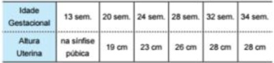
A Restrição de crescimento intrauterino tardia.
B Restrição de crescimento intrauterino precoce.
C Crescimento intrauterino adequado.
D Erro no cálculo da idade gestacional.
Questão 74 · Conduta · 4000109403Primigesta, 20 anos, obesa, com 36 semanas de gestação, portadora de hipertensão arterial crônica, em uso de 1 grama de alfametildopa ao dia. Comparece para consulta de seguimento pré-natal. Queixa-se de contrações esporádicas indolores. Nega outras queixas. Refere boa movimentação fetal. No exame físico, a paciente está corada, pressão arterial 150 X 100 mmHg, frequência cardíaca de 82 bpm, ausculta pulmonar e cardíaca sem alterações, abdomen globoso, indolor. Útero normotenso, altura uterina de 30 cm, sem contrações, frequência cardíaca fetal de 130 bpm sem desacelerações. Membros inferiores com edema (+/4+). Cardiotocogra a realizada nessa consulta: feto hipoativo, reativo. O ultrassom obstétrico realizado nessa ocasião mostra: feto único, longitudinal, cefálico, anatomia fetal normal, peso estimado de 1910 gramas (valores normais para 36 semanas: 2050-3390), placenta posterior, grau II, maior bolsão de liquido amniótico de 1,2 cm, per l biofísico fetal de 6/8, centralização hemodinâmica fetal, índice de pulsatilidade do ducto venoso normal. Qual alternativa possui a melhor conduta para o caso?
A Repetir o ultrassom após a prescrição de anti-hipertensivos e normalização dos níveis pressóricos.
B Induzir o trabalho de parto devido ao achado de sinais ecográficos de hipóxia crônica fetal.
C Indicar resolução da gestação por cesárea devido ao comprometimento fetal por acidose.
D Repetir a cardiotocografia e o perfil biofísico fetal após alimentação materna adequada
Questão 75 · Diagnóstico · 4000103001No rastreamento da restrição do crescimento intrauterino, pela ultrassonografia, o parâmetro mais ADEQUADO é
A O diâmetro biparietal.
B A circunferência abdominal.
C A circunferência craniana.
D O comprimento do fêmur.
Questão 76 · Diagnóstico · 4000097798Mulher, 30a, G1P0A0, em seguimento regular de pré-natal, realizou ultrassonogra a com 12 semanas, concordante com amenorreia. Atualmente idade gestacional de 30 semanas, refere endurecimento da barriga há 1 dia, acompanhado de saída de secreção espessa via vaginal. Antecedente pessoal: tabagismo. Exame físico: altura uterina= 25cm, batimento cardiofetais= 152 bpm, dinâmica uterina= ausente; especular= ausência de secreções, pH=5,5. O DIAGNÓSTICO É:
A Restrição de crescimento intrauterino.
B Amniorrexe.
C Trabalho de parto prematuro.
D Gestação dentro da normalidade
Questão 77 · Conduta · 4000090741Paciente de 25 anos, sem comorbidades GIII PI (PN) AI, pré-natal sem intercorrências, realiza ultrassonogra a de rotina na 38ª semana de gestação que apresenta o seguinte laudo: feto único, cefálico, normodramnia, peso estimado em 3.000 g (percentil 50) e placenta anterior grau II de maturidade. A doppler uxometria evidencia artéria umbilical com relação S/D = 2,5, artéria cerebral média com relação S/D = 4,5 e incisura bilateral de artérias uterinas. A conduta indicada diante desse caso é:
A realizar acompanhamento ultrassonográfico semanal
B continuar o acompanhamento pré-natal de rotina
C prescrever aspirina 100 mg/dia
D realizar indução do parto
Questão 78 · Conduta · 4000090303Numa gestação de 28 semanas, constatou-se que o feto apresentava restrição de crescimento intrauterino. A interrupção da gestação será mandatória se houver alteração à dopplervelocimetria do(a)
A Ducto venoso.
B Artéria cerebral média.
C Artéria umbilical.
D Artéria oftálmica.
E Artéria uterina.
Questão 79 · Introdução · 4000085683A Restrição do Crescimento Fetal (RCF) ainda é uma das principais complicações da gravidez e está associada a elevados índices de morbidade e mortalidade perinatal e na infância. Das alternativas abaixo, assinale a incorreta.
A Evidências recentes indicam que a adaptação fetal ao suprimento limitado de nutrientes pode levar a alterações permanentes em sua fisiologia e em seu metabolismo, dando origem a doenças que surgirão posteriormente, na idade adulta, como hipertensão arterial, hipercolesterolemia, coronariopatias e diabetes.
B Em um estudo no qual se analisou a média da estatura de adultos que nasceram com RCF, não se verificou o risco de apresentarem estatura menor quando comparados a adultos que nasceram com peso adequado.
C A definição de RCF mais utilizada na literatura é a do crescimento fetal abaixo do percentil 10 para a idade gestacional, empregando-se curvas-padrão específicas de cada população.
D Vários são os fatores que podem estar envolvidos na gênese da RCF. Tais agentes podem ser de origem exclusivamente fetal, placentária ou materna, ou pode haver associação entre eles.
E As infecções congênitas são responsáveis por aproximadamente 5 a 10% dos casos de RCF e podem ser causadas por vírus, bactérias ou protozoários.
Questão 80 · Vasos estudados · Diagnóstico · 4000084233Gestante, G1 P0, na 33ª semana apresenta restrição do crescimento fetal. Nos exames de propedêutica fetal, observa-se ao Doppler, artéria umbilical com diástole zero e artéria cerebral média com baixa resistência (relação A/B=3,00) e cardiotografia anteparto reativa. O diagnóstico CORRETO é centralização com
A Sofrimento fetal agudo.
B Sofrimento fetal assimétrico.
C Ausência de sofrimento fetal.
D Sofrimento fetal descompensado.
E Sofrimento fetal crônico compensado.
Questão 81 · Etiologia · 4000078032Durante o pré-natal em primigesta de 26 anos, observou-se a partir da segunda metade da gestação diminuição do crescimento do fundo uterino e desaceleração do ganho de peso fetal, con gurando um crescimento intrauterino restrito assimétrico. Uma das causas maternas que podem ser aventadas é:
A Doença vascular.
B Placenta circunvalada.
C Gemelidade.
D Infecção.
Questão 82 · Artéria cerebral média ACM · Artéria uterina · Indicações · 4000016756Gestante hipertensa crônica, com idade gestacional de 28 semanas, realizou dopplervelocimetria, há um dia, com o seguinte laudo: "Artérias uterinas apresentando persistência de incisura protodiastólica. Aumento de resistência na artéria umbilical. Centralização de uxo fetal". Iniciou corticoide para maturação pulmonar fetal há um dia. No momento, referindo diminuição da movimentação fetal. Qual a melhor conduta para essa situação?
A Repetir Doppler arterial fetal.
B Realizar Doppler venoso fetal.
C Resolver imediatamente a gestação.
D Reavaliar movimentação fetal nas próximas 24 horas.
Questão 83 · Conduta · 4000122475Gestante de 32 semanas traz ultrassom mostrando peso fetal estimado de 1350 g, ILA 6,8, doppler da artéria cerebral média de 68% e da artéria umbilical de 80%. Realizou cardiotocogra a que mostrou feto ativo. Quais as suas hipóteses diagnósticas e melhor conduta frente ao caso? Obs.: valor normal de peso para 32 semanas: 1290 – 2280; Valor normal de ILA para 32 semanas: 7,1 – 20,4.
A Restrição de crescimento intrauterino e resolução da gestação por sofrimento fetal.
B Oligoâmnio e reavaliações da vitalidade fetal semanais visto que avaliação dopplervelocimétrica normal.
C Ultrassonografia normal com retorno em 2 semanas para nova consulta de pré-natal.
D Oligoâmnio e centralização fetal; como carditocografia normal, realizar corticoindução e acompanhamento da vitalidade fetal diariamente.
E Centralização fetal, restrição de crescimento intrauterino e oligoâmnio, com indicação de resolução da gestação
Questão 84 · Etiologia · 4000118042Gestante de 22 anos, tabagista há 6 anos (10 cigarros ao dia), vem para consulta de pré-natal com 10 semanas de gestação. Diante de tal caso, devemos orientá-la quanto ao risco de qual complicação para o feto durante a gestação?
A Macrossomia.
B Restrição de crescimento intrauterino.
C Eclâmpsia.
D Pós-datismo.
Questão 85 · Dopplervelocimetria Doppler · Diagnóstico · Distúrbios hipertensivos na gestação DHEG · 4000112187Ao receber o resultado de uma doppler uxometria das artérias uterinas (com a imagem mostrada abaixo) (VER IMAGEM) e ao prestar atenção nas porções do gráfico assinaladas com setas brancas, o obstetra deve car muito atento, porque esse perfil é marcador de:


A mola hidatiforme e descolamento prematuro de placenta.
B doença hipertensiva específica da gravidez e amniorrexe prematura.
C restrição de crescimento intrauterino e amniorrexe prematura.
D restrição de crescimento fetal e doença hipertensiva específica da gravidez.
E abortamento retido e amniorrexe prematura.
Questão 86 · Artéria uterina · Distúrbios hipertensivos na gestação DHEG · Crescimento f etal · 4000112035Em gestantes, a observação de incisura protodiastólica na dopplerfluxometria das artérias uterinas é marcador de:
A eclâmpsia e amniorrexe prematura.
B pré-eclâmpsia e restrição de crescimento intrauterino.
C amniorrexe prematura e restrição de crescimento intrauterino.
D hipertensão arterial essencial e restrição de crescimento intrauterino.
E hipertensão arterial essencial associada à pré-eclâmpsia.
Questão 87 · Artéria umbilical · Conduta · 4000069902Gestante de 35 semanas, referindo diminuição da movimentação fetal, apresenta ao ultrassom feto com peso estimado abaixo do percentil 3 e Doppler da artéria umbilical com diástole reversa. A melhor conduta no caso é:
A Resolução do parto.
B Complementar a investigação com cardiotocografia e realizar o parto se houver acelerações transitórias.
C Repetir a ultrassonografia com Doppler da artéria umbilical em uma semana.
D Complementar a investigação com perfil biofísico fetal e realizar o parto caso não sejam identificados movimentos Respiratórios fetais.
E Realizar uma cordocentese para obter amostra de sangue fetal para uma gasometria
Questão 88 · Períodos do trabalho de parto · 4000068830Primigesta, com 39 semanas de gestação, chega à emergência relatando diminuição do fundo uterino, dor lombar e perda transvaginal de muco com sangue. A cardiotocogra a basal apresentou padrão reativo. Ao exame: BCF = 142 bpm; FU = 3 cm abaixo da última mensuração anotada no cartão de pré-natal. Colo 40% apagado, fechado. Metrossístoles 1 em 20 minutos. O diagnóstico é:
A Segundo período do parto.
B Crescimento intrauterino restrito.
C Período premonitório do parto.
D Oligodrâmnia.
Questão 89 · Conduta · 4000066130Paciente de 22 anos, GIP0A0, com lúpus eritematoso sistêmico, em uso de hidroxicloroquina e prednisona, é atendida na 32ª semana de gestação em consulta pré- natal, assintomática e estável clinicamente. Ela apresenta o seguinte laudo de exame ultrassonográ co: feto único; situação longitudinal; apresentação cefálica; placenta anterior grau II de maturidade; normodramnia; circunferência abdominal e peso fetal abaixo do percentil 3 para idade gestacional; doppler uxometria da artéria umbilical normal para idade gestacional. A cardiotocogra a apresenta padrão reativo. A recomendação para a condução inicial desse caso é:
A Prescrição de corticoterapia e posterior indução do parto.
B Indicação de suplementação nutricional e início de aspirina.
C Realização de cordocentese para cariotipagem e rastreio infeccioso fetal.
D Seguimento pré-natal com acompanhamento rigoroso do bem-estar fetal.
Revisar: possível letra faltando em enunciado
Questão 90 · Diagnóstico · Classif icação · 4000035220Gestante com 18 semanas, 40 anos de idade, com diagnóstico clínico e ultrassonográ co, há 15 dias, de Restrição de Crescimento Intrauterino (RCIU) e, pela medida da altura uterina, com 15 cm. A principal hipótese diagnóstica para esse caso é:
A RCIU assimétrica.
B RCIU simétrica.
C Macrossomia fetal.
D Feto AIG.
Revisar: possível letra faltando em enunciado
Questão 91 · Altura uterina AU · Diagnóstico · Classif icação · 4000012253Paciente com gestação de 30 semanas, em acompanhamento pré-natal na unidade básica de saúde da família. Ao exame obstétrico: fundo uterino = 26 cm; frequência cardíaca fetal = 140 bpm. Solicitado exame de ultrassonogra a obstétrica que revelou os seguintes parâmetros para 30 semanas: circunferência cefálica = percentil 25°; circunferência abdominal = percentil 8°; comprimento do fêmur = percentil 25°; peso estimado = percentil 8°. Ante o quadro clínico e os achados ultrassonográficos, qual o diagnóstico a ser firmado?
A Restrição do crescimento fetal do tipo simétrico.
B Restrição do crescimento fetal do tipo assimétrico.
C Restrição do crescimento fetal do tipo intermediário.
D Crescimento fetal adequado para a idade gestacional.
Questão 92 · Classif icação · Ducto venoso DV · Conduta · 4000012249Gestante de 18 anos foi encaminhada para a Maternidade por apresentar PA=160x100 mmHg durante a consulta pré-natal, que reduziu para 140x100 mmHg após decúbito lateral esquerdo. Negava cefaleia, turvação visual, náuseas, vômitos ou epigastralgia. Realizou exames laboratoriais com os seguintes resultados: plaquetas=160.000/mm³, TGO= 20U/L, TGP= 30U/L, LDH= 250U/L, Creatinina=0,9 mg/dl, proteinúria de 24h=350 mg. A ultrassonogra a obstétrica revelou idade gestacional de 30 semanas, peso fetal estimado no 5°. Percentil, índice de líquido amniótico de 20 mm e doppler do ducto venoso com onda A zero. Defina a MELHOR conduta dentre as opções abaixo.
A Acompanhamento ambulatorial.
B Repetir doppler com 1 semana.
C Induzir parto com misoprostol.
D Indicar parto abdominal.
Questão 93 · Restrição de crescimento f etal RCF · Classif icação · Def inição · 4000004624Analise as sentenças abaixo como verdadeiro ou falso: I. Crescimento intrauterino restrito é a denominação para fetos com menos de 2.500g. II. Na restrição de crescimento intrauterino simétrico a circunferência cefálica está do tamanho adequado para a idade gestacional e a circunferência abdominal está diminuída. III. Na restrição de crescimento intrauterino assimétrico a circunferência cefálica e circunferência abdominal estão do tamanho adequado para a idade gestacional. IV. A restrição de crescimento intrauterino simétrico é considerado como indicador de insulto intrínseco precoce no crescimento fetal como ocorre nas aneuploidias, malformações estruturais, infecções, drogas ou outros agentes químicos. V. A restrição de crescimento intrautrerino assimétrico é consequência de fatores extrínsecos geralmente associado a doença vascular materna e se apresenta tardiamente na gravidez após 28 semanas. A sequencia correta é:
A F, F, F, V, V
B F, V, V, V, F
C V, V, F, F, V
D V, F, V, F, V
Questão 94 · Diagnóstico · 4000109557Em gestante primigesta com diagnóstico clínico há 15 dias de restrição de crescimento intrauterino (RCIU) com gestação de 18 semanas e pela medida da altura uterina com 15 cm, a conduta correta para a confirmação do diagnóstico é: Respostas: 1 12 23 34 45 56 67 78 89
A cardiotocografia.
B dopplervelocimetria das artérias uterinas.
C ultrassonografia seriada.
D seguimento com medida da altura uterina.
E dopplervelocimetria da artéria umbilical.